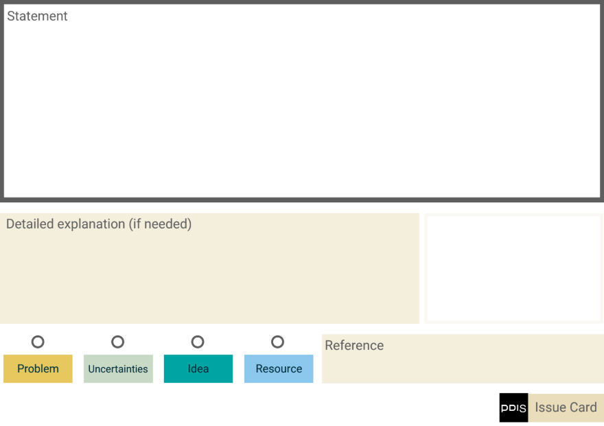
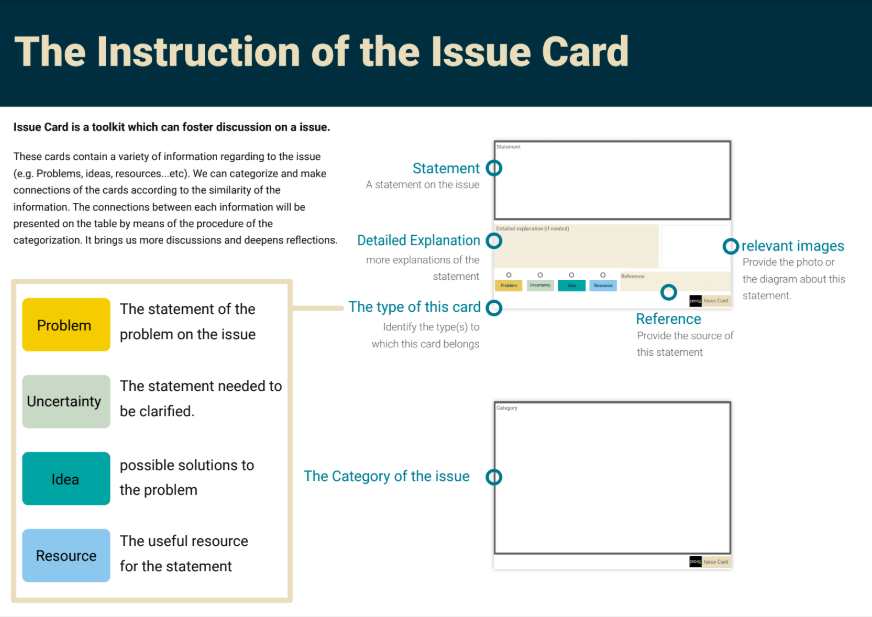
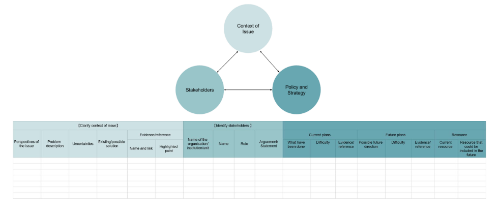
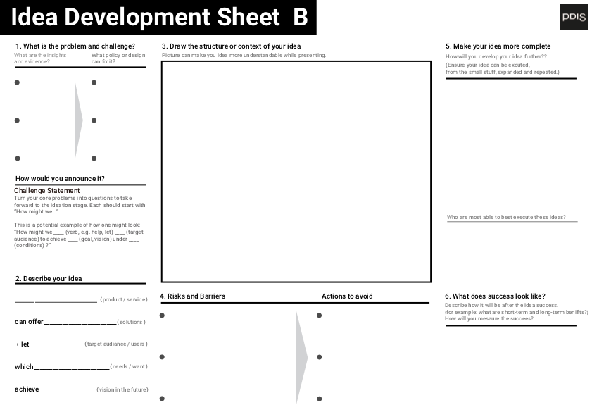

Toolkits
Since 2016, PDIS has been developing these toolkits for public sector's service design process.
Issue Card
Issue Card is a toolkit which can foster discussion on different issues.
These cards contain a variety of information regarding to the issue (e.g. Problems, ideas, resources, etc.)
We can categorize and make connections of the cards according to the similarity of the information.
The connections between each information will be presented on a table clearly.
By doing this, it helps lower the threshold for reflection and critique by making the information clearer during discussions.

Issue Card Instruction
With the help of Issue Card, facilitator can start with semi-structured conversation around an issue. Here is an instruction paper specifying purpose and usages of all areas on an issue card template.

Issue Mapping Instruction
The ‘Issue Mapping Instruction’ can help lower the threshold for reflection and critiquing by making the information clearer during discussions. Issue Mapping Instruction consists of three linked segments. The first segment asks participants to clarify context of issue, the second segment identifies stakeholders, and the last segment highlights policy and strategy.

Idea Development Sheet
Idea development sheet is a big canvas use to develop innovative ideas.
There are two idea development sheets per the facilitator's choice.
It is recommended to use idea development sheet A for a more abstract value proposition discussion, while to use idea development sheet B for a more concrete discussion and idea illustration.
